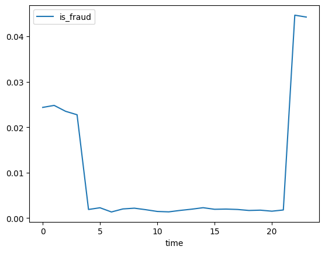

import pandas as pd
import numpy as np
import matplotlib.pyplot as plt_df = pd.read_csv("fraudTrain.csv")cus_list = set(_df.query('is_fraud==1').cc_num.tolist())
_df2 = _df.query("cc_num in @ cus_list")
_df2 = _df2.assign(time= list(map(lambda x: int(x.split(' ')[-1].split(':')[0]), _df2['trans_date_trans_time'])))_df2.shape(651430, 24)_df2.columnsIndex(['Unnamed: 0', 'trans_date_trans_time', 'cc_num', 'merchant', 'category',
'amt', 'first', 'last', 'gender', 'street', 'city', 'state', 'zip',
'lat', 'long', 'city_pop', 'job', 'dob', 'trans_num', 'unix_time',
'merch_lat', 'merch_long', 'is_fraud', 'time'],
dtype='object')_df2.info()<class 'pandas.core.frame.DataFrame'>
Int64Index: 651430 entries, 3 to 1048574
Data columns (total 24 columns):
# Column Non-Null Count Dtype
--- ------ -------------- -----
0 Unnamed: 0 651430 non-null int64
1 trans_date_trans_time 651430 non-null object
2 cc_num 651430 non-null float64
3 merchant 651430 non-null object
4 category 651430 non-null object
5 amt 651430 non-null float64
6 first 651430 non-null object
7 last 651430 non-null object
8 gender 651430 non-null object
9 street 651430 non-null object
10 city 651430 non-null object
11 state 651430 non-null object
12 zip 651430 non-null int64
13 lat 651430 non-null float64
14 long 651430 non-null float64
15 city_pop 651430 non-null int64
16 job 651430 non-null object
17 dob 651430 non-null object
18 trans_num 651430 non-null object
19 unix_time 651430 non-null int64
20 merch_lat 651430 non-null float64
21 merch_long 651430 non-null float64
22 is_fraud 651430 non-null int64
23 time 651430 non-null int64
dtypes: float64(6), int64(6), object(12)
memory usage: 124.3+ MB_df2["is_fraud"].value_counts()0 645424
1 6006
Name: is_fraud, dtype: int64_df2["is_fraud"].value_counts()/len(_df2)0 0.99078
1 0.00922
Name: is_fraud, dtype: float64_df2.groupby(by=['is_fraud']).agg({'city_pop':np.mean,'amt':np.mean,'time':np.mean})| city_pop | amt | time | |
|---|---|---|---|
| is_fraud | |||
| 0 | 83870.443845 | 67.743047 | 12.813152 |
| 1 | 96323.951715 | 530.573492 | 13.915917 |
_df2.groupby(by=['category']).agg({'is_fraud':np.mean})._df2.groupby(by=['time']).agg({'is_fraud':np.mean}).plot()
그래프상 시간을 3등분 하거나 2등분 해서 적합시키면 좋을 거 같다.
- 3등분: 20 ~ 04, 04 ~ 12, 12 ~ 20
- 2등분: 06 ~ 18, 18 ~ 06
사기거래와 사기거래가 아닌 그룹에서 데이터 범주가 차이가 나는걸 보면
금액, 시간..
_df2.groupby(by=['is_fraud']).agg({'trans_date_trans_time':np.mean})NameError: name '_df2' is not defined_df2.trans_date_trans_time[3].split(' ')[-1].split(':')[0]'0'pd.to_datetime(['0:01','16:06'])DatetimeIndex(['2023-04-14 00:01:00', '2023-04-14 16:06:00'], dtype='datetime64[ns]', freq=None)